所谓循环依赖指的是：BeanA对象的创建依赖于BeanB，BeanB对象的创建也依赖于BeanA，这就造成了死循环，如果不做处理的话势必会造成栈溢出。Spring通过提前曝光机制，利用三级缓存解决循环依赖问题。本节将记录单实例Bean的创建过程，并且仅记录两种常见的循环依赖情况：普通Bean与普通Bean之间的循环依赖，普通Bean与代理Bean之间的循环依赖。
Bean创建源码
我们先通过源码熟悉下Bean创建过程（源码仅贴出相关部分）。
IOC容器获取Bean的入口为AbstractBeanFactory类的getBean方法：
1 | public abstract class AbstractBeanFactory extends FactoryBeanRegistrySupport implements ConfigurableBeanFactory { |
该方法是一个空壳方法，具体逻辑都在doGetBean方法内：
1 | public abstract class AbstractBeanFactory extends FactoryBeanRegistrySupport implements ConfigurableBeanFactory { |
doGetBean方法中先通过getSingleton(String beanName)方法从三级缓存中获取Bean实例，如果不为空则进行后续处理；如果为空，则通过getSingleton(String beanName, ObjectFactory<?> singletonFactory)方法创建Bean实例并进行后续处理。
这两个方法都是AbstractBeanFactory父类DefaultSingletonBeanRegistry的方法，AbstractBeanFactory层级关系图如下所示：
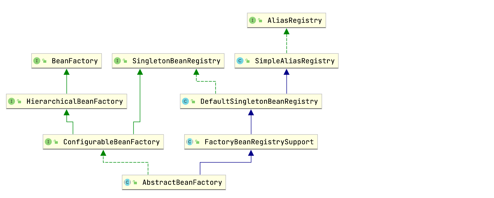
getSingleton(String beanName)相关源码如下所示：
1 | public class DefaultSingletonBeanRegistry extends SimpleAliasRegistry implements SingletonBeanRegistry { |
所谓的三级缓存指的是DefaultSingletonBeanRegistry类的三个成员变量：
1 | public class DefaultSingletonBeanRegistry extends SimpleAliasRegistry implements SingletonBeanRegistry { |
| 变量 | 描述 |
|---|---|
| singletonObjects | 一级缓存，key为Bean名称，value为Bean实例。这里的Bean实例指的是已经完全创建好的，即已经经历实例化->属性填充->初始化以及各种后置处理过程的Bean，可直接使用。 |
| earlySingletonObjects | 二级缓存，key为Bean名称，value为Bean实例。这里的Bean实例指的是仅完成实例化的Bean，还未进行属性填充等后续操作。用于提前曝光，供别的Bean引用，解决循环依赖。 |
| singletonFactories | 三级缓存，key为Bean名称，value为Bean工厂。在Bean实例化后，属性填充之前，如果允许提前曝光，Spring会把该Bean转换成Bean工厂并加入到三级缓存。在需要引用提前曝光对象时再通过工厂对象的getObject()方法获取。 |
如果通过三级缓存的查找都没有找到目标Bean实例，则通过getSingleton(String beanName, ObjectFactory<?> singletonFactory)方法创建：
1 | public class DefaultSingletonBeanRegistry extends SimpleAliasRegistry implements SingletonBeanRegistry { |
上述代码重点关注singletonFactory.getObject()，singletonFactory是一个函数式接口，对应AbstractBeanFactory的doGetBean方法中的lambda表达式：
1 | sharedInstance = getSingleton(beanName, () -> { |
重点关注createBean方法。该方法为抽象方法，由AbstractBeanFactory子类AbstractAutowireCapableBeanFactory实现：
1 | public abstract class AbstractAutowireCapableBeanFactory extends AbstractBeanFactory |
doCreateBean源码：
1 | public abstract class AbstractAutowireCapableBeanFactory extends AbstractBeanFactory |
addSingletonFactory方法为父类DefaultSingletonBeanRegistry的方法：
1 | public class DefaultSingletonBeanRegistry extends SimpleAliasRegistry implements SingletonBeanRegistry { |
上述整个过程可以用下图来总结（可右键选择新标签页中打开图片）：
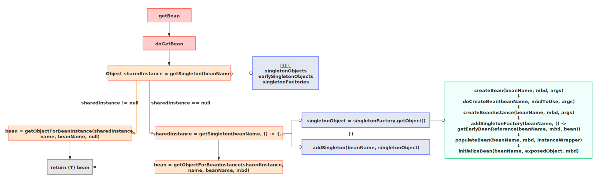
光看源码有点抽象，下面我们通过两个场景来加深理解。
普通Bean与普通Bean
首先模拟普通Spring Bean与普通Spring Bean之间循环依赖的场景。
新建SpringBoot项目，pom引入如下依赖：
1 | <dependencies> |
新建CircularReferenceTest类：
1 | public class CircularReferenceTest { |
上面代码通过AnnotationConfigApplicationContext创建了IOC容器，并先后注册了BeanA和BeanB，BeanA和BeanB相互依赖，程序输出如下：
1 | cc.mrbird.BeanA@368f2016 |
可以看到，Spring成功解决了循环依赖。下面配合源码来分析这个过程。
上面程序中，先创建BeanA，Spring内部调用doGetBean方法获取BeanA。一开始三级缓存中肯定没有BeanA和BeanB相关实例：
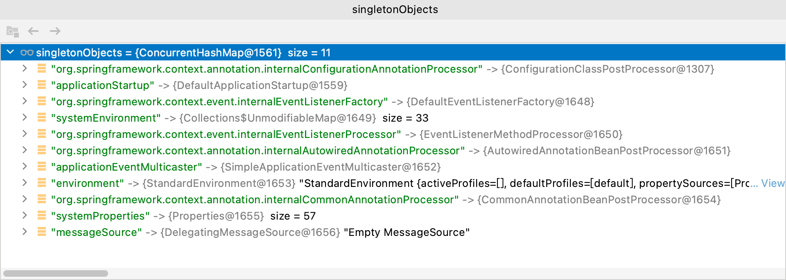
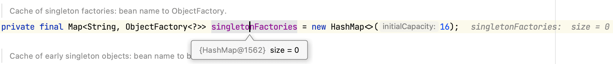
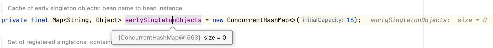
所以我们直接看doCreateBean相关源码：
1 | public abstract class AbstractAutowireCapableBeanFactory extends AbstractBeanFactory |
上面代码，Spring实例化了BeanA，然后往三级缓存中添加了BeanA的工厂对象，根据前面getEarlyBeanReference方法的源码我们可以知道，在不存在AOP代理的情况下，该方法直接返回原始BeanA对象。所以通过该工厂方法创建的BeanA对象仅仅是进行了实例化操作，属性还未被赋值，换句话说，该工厂用于提前曝光BeanA实例。
接着调用populateBean方法对BeanA属性赋值，赋值过程发现BeanA依赖于BeanB，所以Spring重复以上步骤创建BeanB。创建过程中同样会遇到populateBean方法对BeanB属性赋值，赋值过程中发现BeanB依赖于BeanA，于是Spring又回头创建BeanA，不过这时候情况就开始不一样了！！
doGetBean方法内部从三级缓存中获取BeanA对象时，三级缓存内容如下：
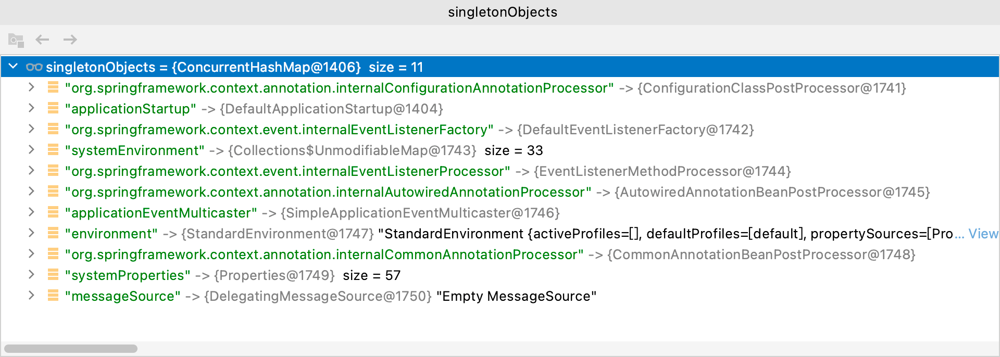
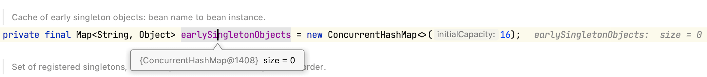
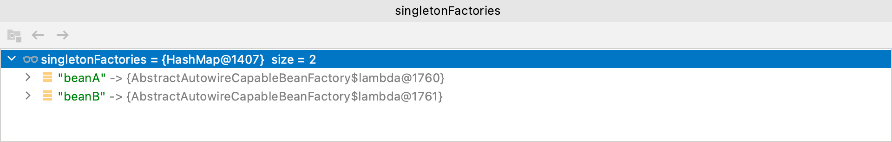
可以看到一级缓存和二级缓存没有什么不一样，但三级缓存中已经存在BeanA和BeanB的工厂对象了！
所以此时getSingleton(String beanName, boolean allowEarlyReference)方法内的逻辑如下：
1 | public class DefaultSingletonBeanRegistry extends SimpleAliasRegistry implements SingletonBeanRegistry { |
此时查看二级缓存：
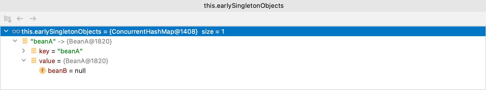
可以看到，BeanA确实只是早期实例，属性BeanB还未被赋值呢。
随后BeanB在属性填充的时候获取到了BeanA早期实例，完成属性填充、初始化等后续操作，BeanB创建完毕。BeanB完整创建完毕后，BeanA随之也完成属性填充、初始化等后续操作，BeanA也创建完毕，循环依赖得以解决。
BeanB虽然获取到的是BeanA的早期对象，但当BeanA完整创建完毕后，BeanB里的BeanA也将会是完整的，因为指针指向的都是同一个BeanA地址。
画个图总结上面的过程（可右键选择新标签页中打开图片）：
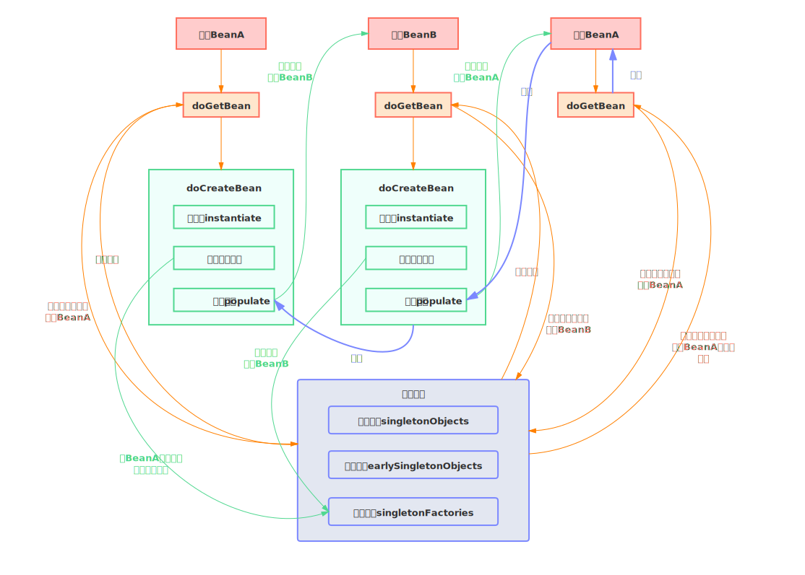
普通Bean与代理Bean
普通Bean和代理Bean之间的循环依赖和上面过程差不多，不过细节上有些许差异。
删除上面创建的CircularReferenceTest类。为了模拟AOP代理的情况，我们需要引入AOP依赖：
1 | <dependency> |
然后修改Boot入口类：
1 |
|
因为MyAspect切面类的存在，BeanA将会是个代理类，而BeanB则是普通Bean，程序输出如下：
1 | onBefore：getBeanB方法开始执行 |
假设容器先创建BeanA，过程和上面的例子一致，属性填充时，发现BeanA依赖BeanB，然后Spring开始创建BeanB。创建BeanB时候又发现其依赖BeanA，这时三级缓存中已经存在BeanA的工厂对象了，所以直接通过该工厂对象获取BeanA的早期实例：
1 | public class DefaultSingletonBeanRegistry extends SimpleAliasRegistry implements SingletonBeanRegistry { |
singletonFactory.getObject()实际实现为lambda表达式() -> getEarlyBeanReference(beanName, mbd, bean)，getEarlyBeanReference方法源码：
1 | protected Object getEarlyBeanReference(String beanName, RootBeanDefinition mbd, Object bean) { |
在引入AOP依赖后，容器中将会有一个SmartInstantiationAwareBeanPostProcessor接口的实现类AbstractAutoProxyCreator，用于创建AOP代理，所以上面getEarlyBeanReference方法里的bp.getEarlyBeanReference(exposedObject, beanName)逻辑实际上为AbstractAutoProxyCreator实现的getEarlyBeanReference方法：
1 | public abstract class AbstractAutoProxyCreator extends ProxyProcessorSupport |
所以BeanB从三级缓存中获取到的为代理后的BeanA实例：
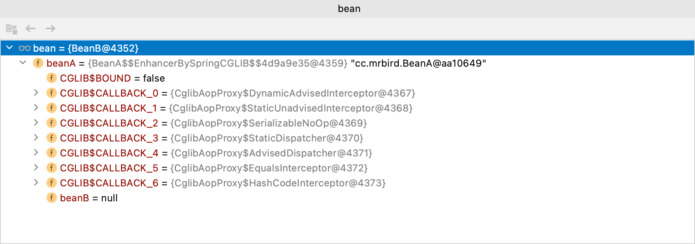
BeanB创建完毕后，BeanA属性填充操作随之结束。
通过深入理解Spring-AOP原理对AOP的学习我们知道，代理对象是在后置处理BeanPostProcessor的postProcessAfterInitialization方法内完成的，而该方法的调用时机为Bean属性填充后的初始化操作时，所以在BeanA属性填充操作结束时，BeanA还只是一个普通对象，而BeanB里的BeanA已经是代理对象了。
继续BeanA的创建过程，BeanA属性填充完后，执行initializeBean(beanName, exposedObject, mbd)方法进行初始化操作：
1 | public abstract class AbstractAutowireCapableBeanFactory extends AbstractBeanFactory |
我们主要关注初始化操作阶段执行动态代理的后置处理方法过程：
1 | public abstract class AbstractAutoProxyCreator extends ProxyProcessorSupport |
到这里BeanA依旧是普通对象，继续查看doCreateBean方法的后续逻辑：
1 | public abstract class AbstractAutowireCapableBeanFactory extends AbstractBeanFactory |
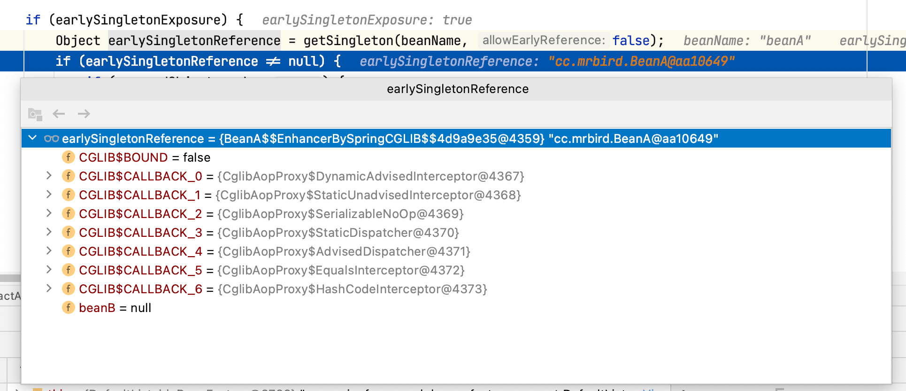
到这里，无论是BeanB里的BeanA，还是IOC容器中的BeanA，都是代理后的BeanA了。
画张图总结下上面的过程（可右键选择新标签页中打开图片）：
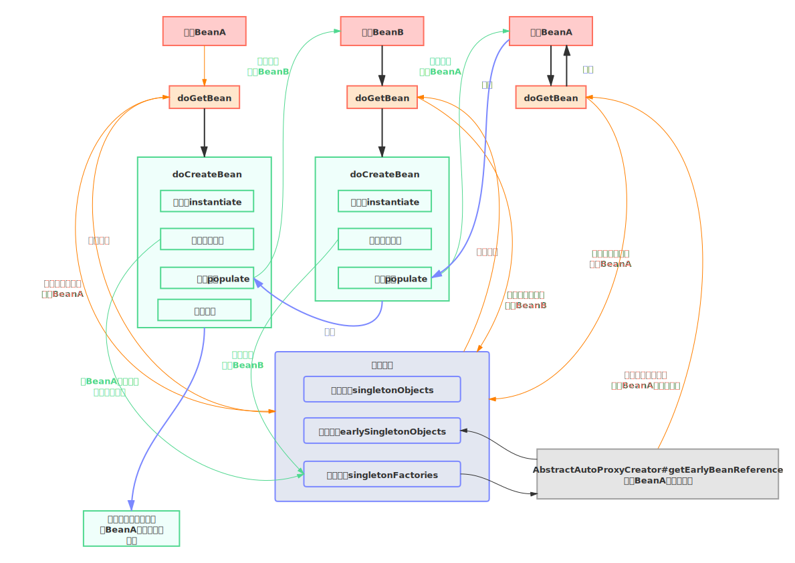
总结
上面的例子都是基于属性注入的情况，假如存在构造器注入情况下的循环依赖，Spring将没办法解决。这是因为对象的提前曝光时机发生在对象实例化之后，而构造器注入时机为对象实例化时，所以此时还未进行提前曝光操作，循环依赖也就没办法解决了，比如下面这种情况：
1 |
|
程序将抛出如下异常：
1 | *************************** |
此外，这里讨论了普通Bean与普通Bean之间的循环依赖，代理Bean与普通Bean之间的循环依赖，实际情况还可能存在工厂Bean与普通Bean、代理Bean之间的循环依赖，这种情况比较复杂，本文不讨论，因为就理解Spring解决循环依赖的思想而言，上面两种情况搞清楚了就OK了。